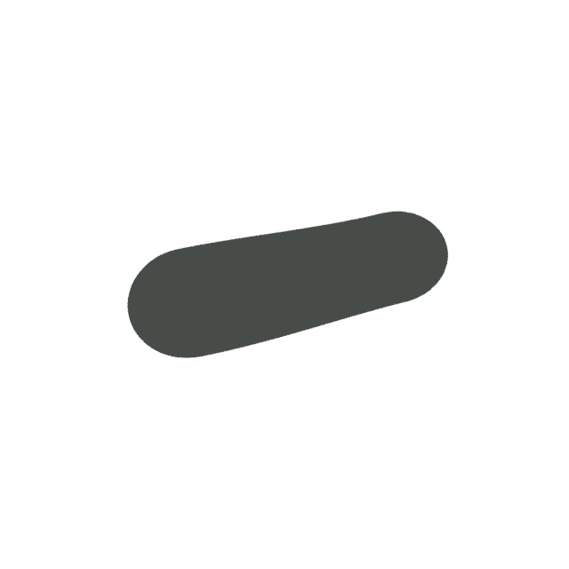
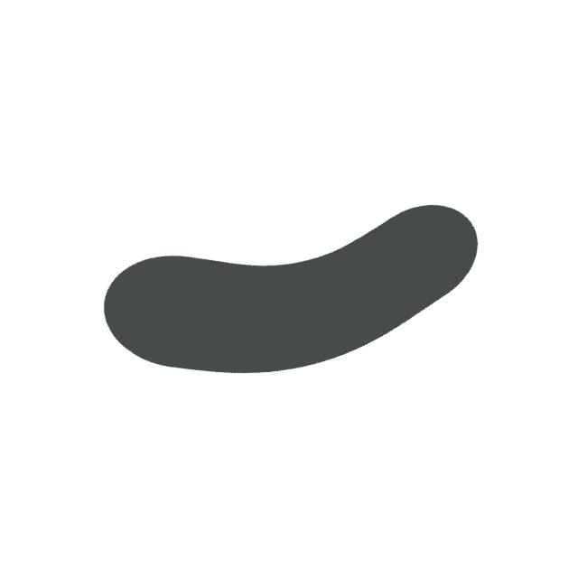
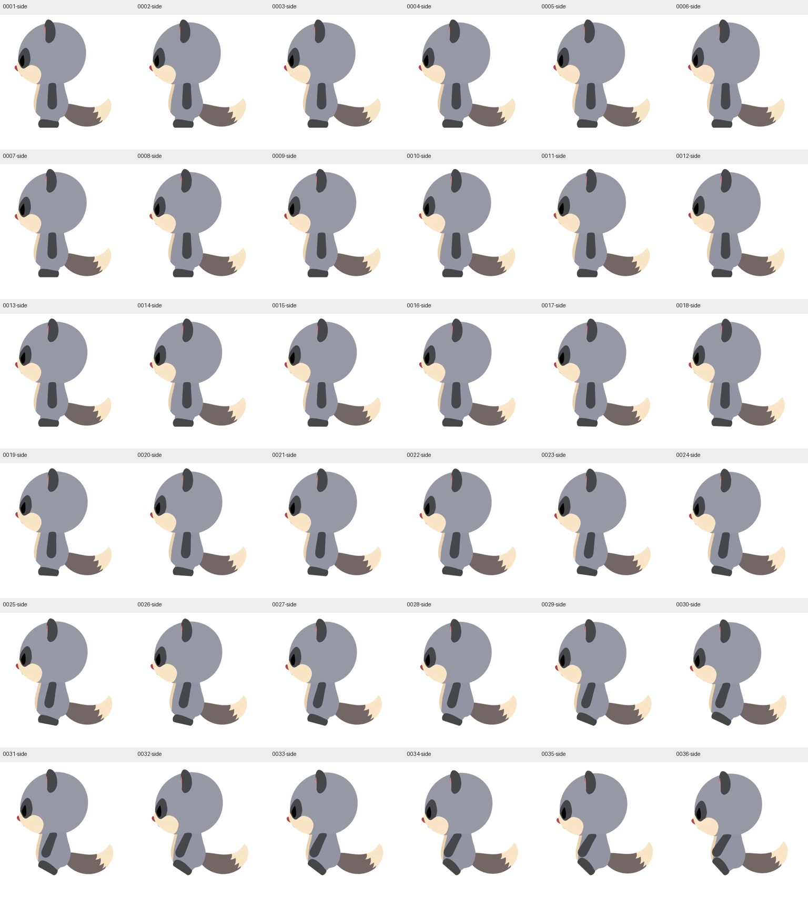

Mozu motion study · preserved-version comparison
Original arms, a new motion
The original shoulders and default arm shape, with a gentler shoulder-led lift. Sit, take six mouthfuls, and let the hands rest.
22.15 seconds · 60 fps · 3 views
Shoulder-led motionFront
Shoulder-led motionOblique
Shoulder-led motionSide
Earlier elbow motionFront
Earlier elbow motionOblique
Earlier elbow motionSide
Both versions use the same cameras. The original arm shape and shoulder attachment are preserved. Shoulder rotations and food-holding poses change; the compact sit and feet stay the same. This is a review candidate.
Arm outline, close up
The actual near arm, isolated from the body. Same viewing direction and scale; each arm is centered separately.
Shoulder-led motion
Earlier motion
Every frame
Complete chronological sheets for the revised movie. Arm details crop the decoded oblique movie, including the shoulder and surrounding body; crop scale varies with the arm bounds.
